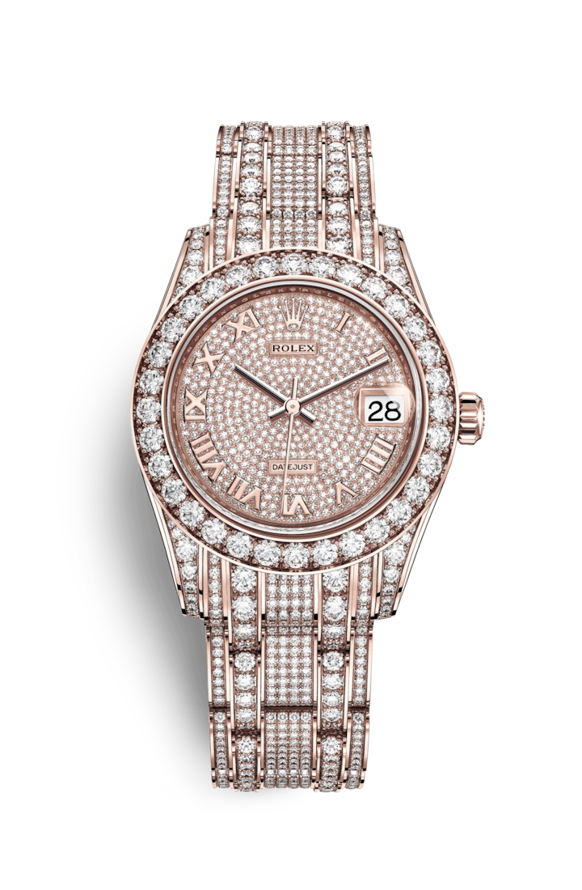

"Характеристика модели"
Золото Еverose
Чтобы красота часов из розового золота не меркла со временем, компания Rolex создала и запатентовала особенный сплав 18‑каратного розового золота, изготавливаемый в ее собственном литейном цехе: золото Everose. Это 18‑каратное золото, изобретенное в 2005 году, используется в моделях Rolex из розового золота.
Циферблат с бриллиантовым «паве»
Ювелир, словно скульптор, вырезает в металле каст (оправу) для закрепки бриллианта. Его задача заключается в том, чтобы тщательно позиционировать каждый камень относительно других, а затем надежно закрепить его в золотой или платиновой оправе. Помимо неизменно высокого качества драгоценных камней, великолепие ювелирной отделки Rolex обусловлено и другими факторами, такими как отбор камней по высоте, их пропорционально выверенное расположение в узоре, тщательный методичный подход к закрепке, а также мастерская работа с металлом. Сияющая симфония драгоценных камней, облагораживающая часы и зачаровывающая их владельца.
Браслет Pearlmaster
Разработка, изготовление и тестирование браслетов и застежек Rolex невозможны без передовых высоких технологий. Как и в случае любых других составляющих часов, визуальный контроль, осуществляемый мастером, гарантирует их безупречный внешний вид. Чувственный и изысканный одновременно, этот массивный золотой браслет с округлыми пятирядными звеньями был создан в 1992 году для часов Pearlmaster. Браслет Pearlmaster сочетается со скрытой застежкой Crownclasp.
Механизм 2236
Oyster Perpetual Pearlmaster 34 – первая модель, в которой применяется калибр 2236 с новой спиралью Syloxi. Этот автоматический калибр с индикацией даты, полностью изготовленный в компании Rolex, представляет новое поколение часовых механизмов. Его конструкция и качество изготовления гарантируют высокую точность и надежность данной модели. Как и все механизмы Rolex Perpetual, калибр 2236 имеет сертификат швейцарского хронометра, выдаваемый сверхточным часам, успешно прошедшим тестирование в Официальном швейцарском институте хронометрии (COSC).
Циклопная линза
Так называемая циклопная линза с увеличением была помещена в окошко индикации даты для более удобного считывания показаний. Это одна из наиболее узнаваемых отличительных особенностей Rolex.
"Полное описание модели"
Часы Rolex Pearlmaster являются жемчужиной ювелирной коллекции Rolex. Модель Pearlmaster с плавными округлыми линиями отличаются уникальным богптством циферблатов и изяществом отделки драгоценными камнями:бриллиантами, сапфирами и рубинами. Эти часы изготавливаются исключительно из 18-каратного желтого, белого золота или золота Everose, отлитого Rolex в своем собственном плавильном цеху.
|